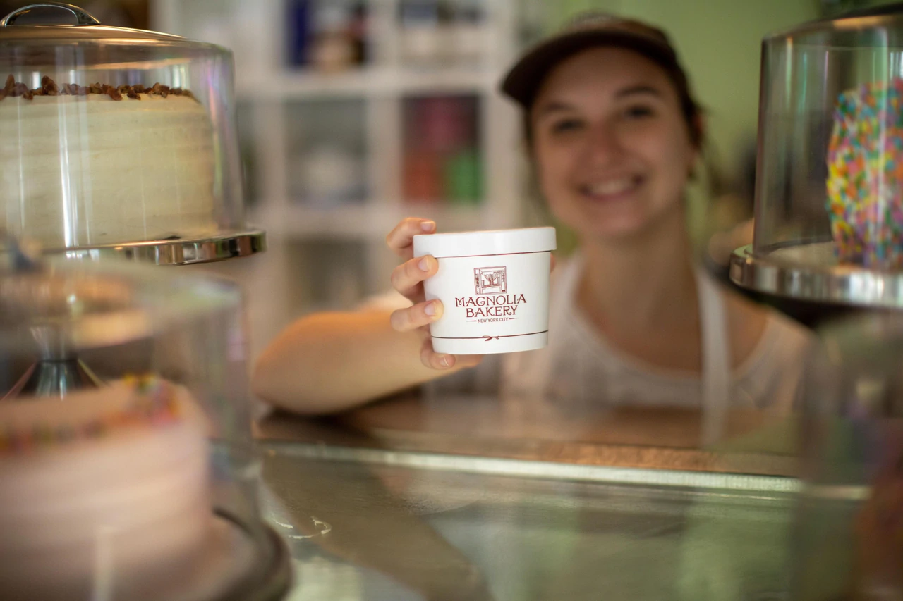

SOBRE NOSOTROS
Nuestra historia
Desde 1996, Magnolia Bakery ha sido una de las panaderias mas queridas de EE.UU y estableció el estándar para postres y productos horneados, probados y verdaderos. Obtenga más información sobre nuestro viaje desde la jota del vecindario hasta el dulce éxito.

Únete a nuestro equipo
La hospitalidad está en el corazón de la experiencia de Magnolia Bakery. Creemos que un ambiente de trabajo respetuoso y empático es crucial para crear una experiencia de equipo positiva y mantener contentos a nuestros huéspedes. ¿Interesado en uno de los conciertos más dulces que existen? Visite nuestra página de carreras para ver las vacantes en todas nuestras ubicaciones en EE. UU.
Devolviendo
Aunque somos famosos en todo el mundo, Magnolia Bakery sigue siendo una panadería de barrio en el fondo. Estamos comprometidos a servir a nuestras comunidades locales mediante el apoyo a pequeñas empresas, organizaciones benéficas, escuelas y ventas de pasteles. Si está buscando una donación de productos para su causa, comuníquese con hello@magnoliabakery.com o use el enlace a continuación para contarnos más.
